Наше меню
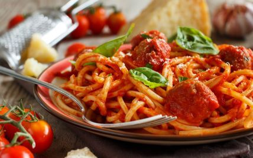
Італійська паста
Смачний рецепт класичної італійської пасти з томатним соусом.
- 200 г пасти
- 300 г томатного соусу
- 2 зубчики часнику
- Оливкова олія
- Сіль і перець
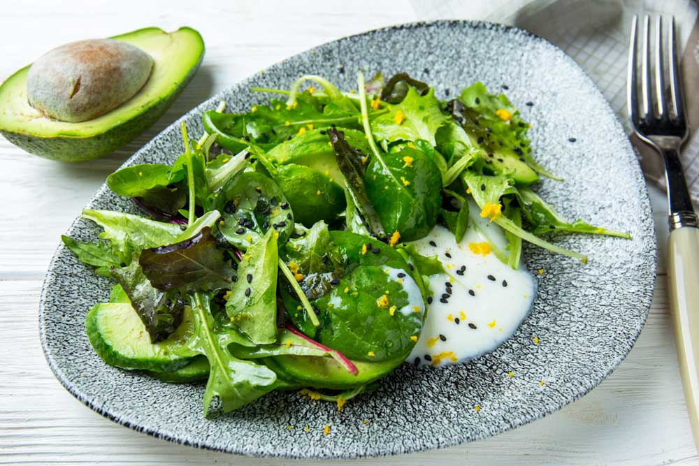
Салат з авокадо
Легкий і корисний рецепт салату з авокадо та зеленню.
- 1 авокадо
- 50 г рукола
- Помідори чері
- Оливкова олія
- Лимонний сік
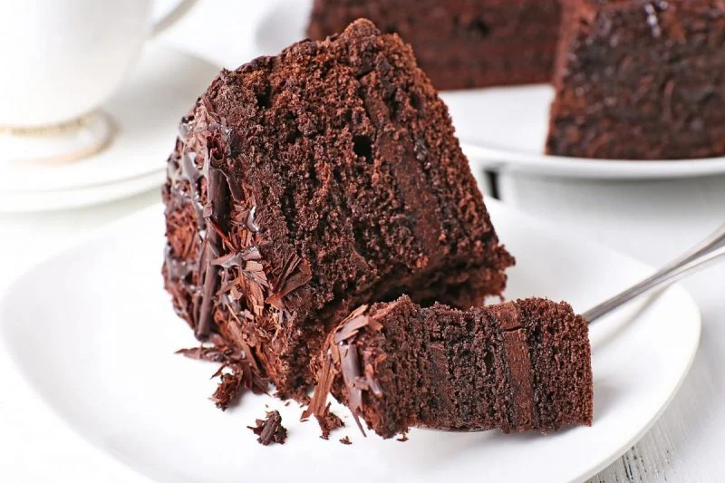
Шоколадний торт
Найкращий десерт для любителів шоколаду.
- 200 г чорного шоколаду
- 150 г масла
- 3 яйця
- 100 г цукру
- 150 г борошна
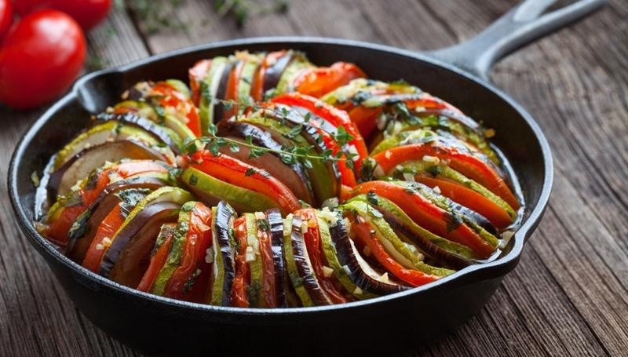
Овочевий рататуй
Традиційна французька страва з сезонних овочів.
- 1 баклажан
- 1 кабачок
- 2 помідори
- 1 болгарський перець
- Томатний соус
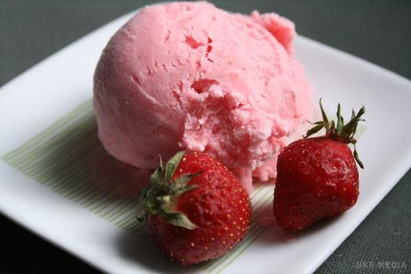
Морозиво з полуниці
Освіжаючий десерт з натуральних інгредієнтів.
- 300 г полуниці
- 200 мл вершків
- 100 г цукру
- Лимонний сік
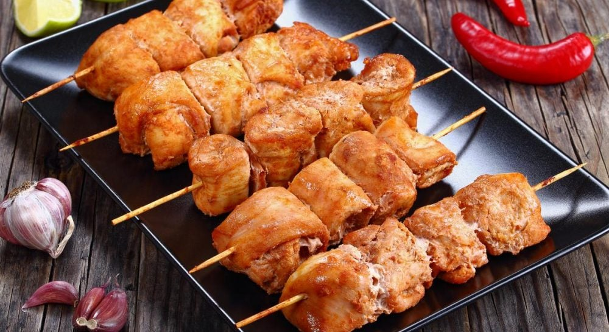
Курячий шашлик
Соковитий шашлик з маринадом з вина.
- 500 г курячого філе
- 200 г вина
- 2 зубчики часнику
- Сіль і спеції
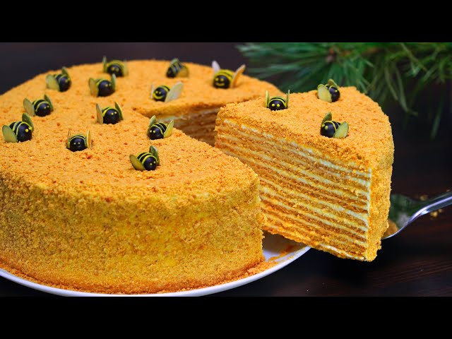
Медовий торт
Класичний десерт із шарів медових коржів і крему.
- 200 г меду
- 150 г масла
- 3 яйця
- 200 г борошна
- 300 г сметани
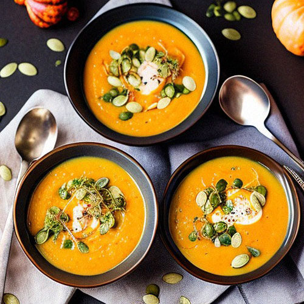
Суп-пюре з гарбуза
Кремовий суп для осіннього затишку.
- 500 г гарбуза
- 1 цибулина
- 200 мл вершків
- Оливкова олія
- Сіль і спеції
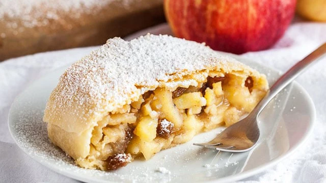
Яблучний штрудель
Ароматний десерт з корицею та яблуками.
- 2 яблука
- 200 г листкового тіста
- 50 г цукру
- Кориця
- Вершкове масло
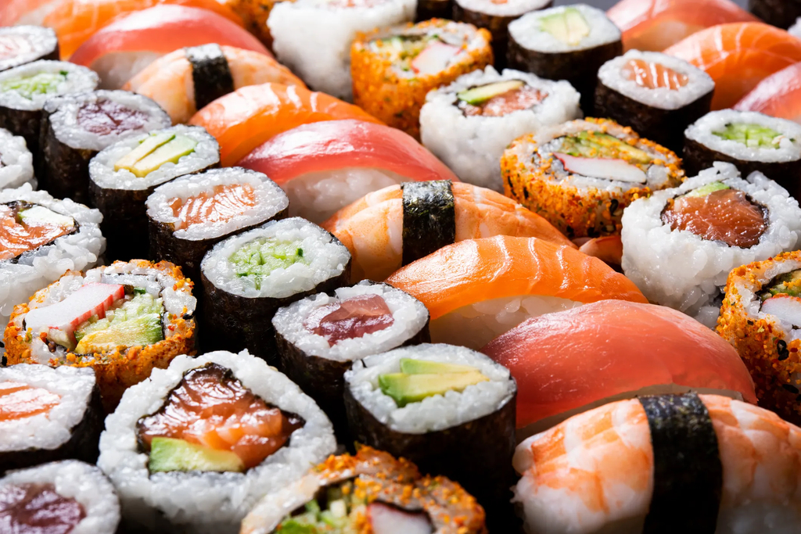
Домашні суші
Покроковий рецепт приготування суші вдома.
- 200 г рису для суші
- Норі
- 150 г риби
- Огірок
- Соєвий соус
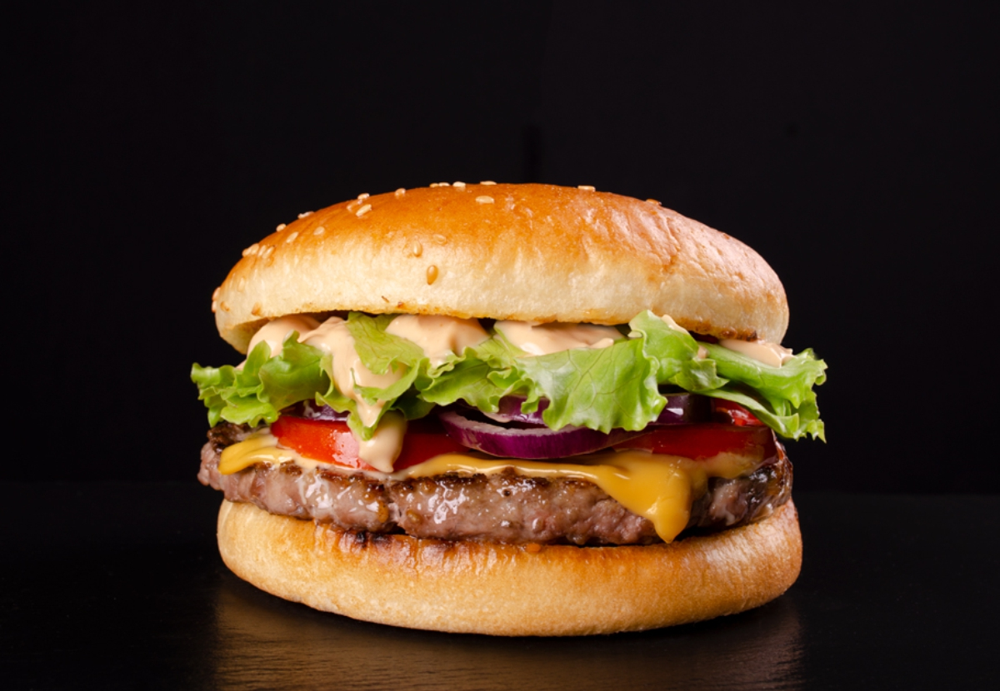
Бургер з яловичини
Домашній бургер із соковитою котлетою.
- 200 г фаршу
- Булочки
- Салат
- Помідор
- Сир
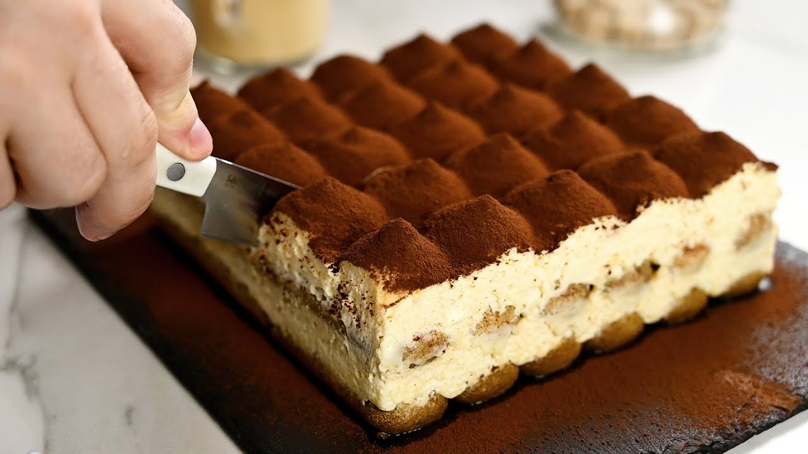
Тірамісу
Найвідоміший італійський десерт з кавовим ароматом.
- 200 г савоярді
- 250 г маскарпоне
- 3 яйця
- 100 мл кави
- Какао-порошок